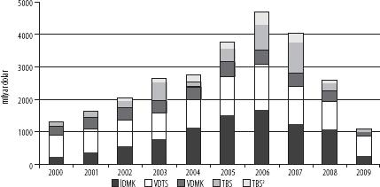

Kaynak: IDSA[22]
Sermayenin yerküreye yayılmasının önündeki en can alıcı risk, paranın zaman ve mekân boyunca sergilediği değer belirsizliği (kurlar ve faiz oranları) olduğuna göre,[23] son otuz yıldaki en baskın piyasa işlem etkinliği ve büyümenin, paraya dayalı türev ürünlerde ortaya çıkmış olması şaşırtıcı sayılmamalı: Faiz oranına ve kura bağlı vadeli işlemler, opsiyonlar ve takaslar.[24] Gerçekten de, paraya dayalı türev ürünlerin kurduğu egemenlik o denli büyük ki, Şekil 1'de bunları diğer türev ürün tiplerinden ayrı bir ölçekte göstermek zorunda kaldık. 2007'de, örneğin, paraya dayalı kapatılmamış türev ürünlerin değeri (neredeyse dört yüz trilyon dolar), krediye dayalı türev ürünler değerini 6 kat, hisselere bağlı olanların değerini de yaklaşık 40 kat geride bırakmaktaydı. 2009'da, kredilere dayalı türev ürünlerin yarı yarıya azalmasıyla, bu üstünlük daha da pekişti.
Paraya dayalı türev ürünler hayli dolambaçsız, açık bir yapı sergilemekte. Ancak, önceki sayfalarda verdiğimiz türev ürün tanımlarında, türev ürün mantığının toplumsal ve ekonomik yaşamda daha geniş alanlara uygulanması yolunda finansal yeniliklerin de devreye sokulduğu bir çerçeve çizmiştik. Faiz oranı ve kura dayalı türev ürünler, nicel bakımdan hâkim durumda bulunsa da, eşzamanlı olarak diğer türev ürün tiplerinde de önemli gelişmeler gözlendi. Bunlar, daha önce değindiğimiz ayrıştırma, nicelleştirme ve metalaştırma hamleleriydi. Riski belirleme ve ayrıştırmanın yeni yollarını tasarlamak üzere, bu hamleler günden güne belirgin ve fahiş hale geldi. Kuruluşların kazanç peşinde koştuğu ve varlık portföylerini çeşitlendirmeye çabaladığı finans piyasalarında, özel bir çekicilik sergilemiş olan bu yeni ürünleri iki sınıfa ayırabiliriz: Varlıklara dayalı türev ürünler ve gelir akışlarına dayalı türev ürünler. Ancak, bu bileşenleri bir araya getirecek şekilde işlev gören pek çok türev ürünün bulunduğunu da söyleyelim.
Varlıklara dayalı türev ürünler
Finans piyasalarında teknoloji ilerledikçe, finans borsalarında yeni ürünler icat edip listelere dâhil etmek de kolaylaştı. Eurex ve Chicago Mercantile Exchange gibi borsalar, alışıldık rollerinin yanı sıra, öncelikle vadeli emtia işlemleri ve opsiyonlarında, sonra da paraya dayalı türev ürünlerde, daha geniş bir ürün yelpazesine yönelik türev ürün piyasaları kurdular. Bu kapsamda, gündelik her şey, alınıp satılabilecek finansal varlıklar şeklinde yeniden icat edilmeye başlandı. Hisselere, hava durumuna, metal fiyatlarına, enerji fiyatlarına, gayrimenkule ve ücretlerdeki değişiklikler gibi makroekonomik göstergelere dayalı türev ürün piyasalarında büyüme gözlenmekte ve bu değişkenlerden her birinin ve ayrıca kimi bileşimlerinin belli özelliklerini ölçen çok çeşitli indeksler ortaya çıkmakta.[25] Ek olarak, büyük kısmı yatırım bankalarında çalışan borsa dışı komisyoncular, işlemlere konu edilebilecek risklere sahip çeşitli taraflar arasında her türden risk alım-satımını tasarlayıp geliştirmekteler.
Bu yeni ürünlerin her birinin doğuşu, doğrudan riske açık durumlar karşısında korunma olanaklarının temin edilmesi çerçevesinde açıklanabilir. Örneğin, enerji tedarikçileri hava sıcaklığının, çiftçiler donun, sanayi de ücretlerdeki eğilimlerin etkilerine maruz kalmaktadır. Daha geniş anlamda ise, bu yeni risk ürünleri, portföylerin çeşitlendirilmesi yönünde bir araca dönüştü.
Kredi temerrüt takasları başta gelmek üzere, kredilere dayalı türev ürünler de bu anlamda kritik öneme sahip ve gerek sergilediği ani gelişim, gerekse küresel finans krizi öncesi ve sırasında ön plana çıkması nedeniyle özel bir ilgiyi hak ediyor (bkz. Şekil 1). Kredilere dayalı türev ürünler, kredilerle ilgili belli durumların gerçekleşme olasılığına yönelik işlemleri de içine alıyor (en önemlisi, bir krediyi geri ödeme aczi). 2001 ile 2007 arasında, en hızlı büyüyen türev ürün konumundaydılar[26] ve 2008'de yaşadıkları çöküş, önde gelen yatırım bankalarının acze düşmesinde merkezî rol oynadı.
Yukarıda değindiğimiz yeni ürünlerin pek çoğunun aksine, kredilere bağlı türev ürünler hem uzun vadeli (özellikle de şirketlerin kredi risklerinden korunması) hem de kısa vadeli amaçlara dönük olarak yapılandırılabilmekte ve çeşitlendirilmiş varlık portföylerinin parçası olarak etkin biçimde alınıp satılabilmekte. Standart bir kredi türevinde, "koruma satıcısı", "koruma alıcısı"ndan düzenli ödemeler alacak, karşılığında da temerrüt veya başka ödememe durumları hâlinde alıcıya belli ödemeler yapmayı taahhüt edecektir.
Bu süreç içerisinde, kredi temerrüt takasları başlangıçta koruma amaçlı olarak geliştirildi. Bankalar, kredi defterlerini ve menkul-kıymetleştirme etkilerini korumaya almak için kredi temerrüt takaslarını kullanacaklardı. Bir bankanın kredi sunma faaliyeti, geri ödeme/temerrüt riskinden arındırıldığında, borçlanma ve borç verme faiz oranları arasındaki fark üzerinde oynanan basit bir oyundan ibaret hale geliyor. Sanayi kuruluşları da bu araçlardan olumlu sonuç alabileceklerini gördüler. Birbirinden bütünüyle farklı temerrüt risklerine sahip iki şirket (örneğin biri tarım, diğeri elektronik sektöründe faaliyet yürütüyor olsun), birbirinin temerrüt risklerini takas edebilecek, böylece kendi risklerini çeşitlendirebilecekti. Kredi temerrüt takası piyasalarında, bu koruma işlemleri asıl olarak "tek isimli araçlar" [tek bir referans borçluya dayalı araçlar – single name instruments] denen şey üzerinden, pek çok zaman yıllarca devam eden sözleşmelerle gerçekleşmekte.
Aşağı yukarı 2004'ten itibaren, kredi türevleri bu doğrudan koruma rolünün sınırlarını aşan, hızlı bir büyüme içine girdi. Bir türev ürün, temerrüt durumunun mülkiyetini edinmeye, yani temerrüde doğrudan maruz kalmaya gerek bırakmadan temerrüdün etkisine maruz kalma olanağını tanıdığından, kredilere dayalı türev ürünler, temerrüt durumuyla ilgisi bulunmayan üçüncü kişilerin varlık portföylerinde de tutulabiliyordu. Üçüncü kişilerden gelen bu yöndeki talebi karşılamak üzere, kredilere bağlı türev ürünlerin, üçüncü kişi portföyleri için daha elverişli olan, krediye dayalı tahviller ve portföyle ilişkili ürünler gibi biçimlerde geliştirildiği gözlendi.[27]
Bu ürünler, menkul-kıymetleştirilmiş yükümlülükler ve çeşitli "durumlar"ın daha geniş bir yelpazesi üzerinde uygulanır hale geldi. "Çok isimli araçlar" [birden fazla referans borçluya dayalı araçlar - multi name instruments] da bu yelpaze genişlemesinin kapsamına giriyor. İpoteğe dayalı menkul kıymetlerde ve diğer teminatlı borç senetlerinde artık alıştığımız "yap-sat" modeli için uygulananla esasen aynı süreç içerisinde işleyen çok isimli kredi türevleri, çeşitli kredi risklerinin bir araya getirildiği, dilimlendiği, derecelendirildiği ve küresel finans piyasalarına satıldığı ürünlerden, ayrıca kredi temerrüt indeksi işlemlerini esas alan ürünlerden oluşmakta. Uygulamada, bu çok isimli kredi türevleri de çeşitlendirilmiş bir portföy içindeki bir varlık sınıfı haline geliyor.[28] Cazip getiri sağlayacağı tahmin edilen bu ürünlerin, diğer varlık sınıflarından farklı bir fiyat döngüsüne gireceği düşünülmekteydi. Bir anlamda, çok isimli türevlerin tabi olduğu riskler, bu türevlerin diğer ürünlerden farklı olması ve dolayısıyla riskin çeşitlendirilmesi anlamına gelmesi yanında ikincil öneme sahipti.
Şunu da belirtelim ki, küresel finans krizinde basın-yayın tarafından suçlu ilan edildikleri halde, kredi temerrüt takaslarında kriz sonrasında gözlenen gerileme ılımlı düzeyde kaldı. 2009'da, kredi temerrüt takas piyasalarındaki kapatılmamış nominal tutarlar, hem tek isimli, hem de çok isimli ürünlerde hâlâ 2006'daki düzeyi korumaktaydı.[29] Kuşkusuz, kredi türevleri de tüm türev ürünlerin doğasında var olan şeyi keskin bir biçimde ortaya koydu: Riskin metalaştırılması, risk portföylerinin çeşitlendirilmesine izin veriyor ve kazanç arayışını besliyor. Çeşitlenme ile herhangi bir riskin etkisi daha da yaygınlaşıyor ve sonuçta riskler büyük ölçüde yanlış fiyatlandırılıyor, sorunların başka yerlere bulaşması olasılığı ciddi biçimde artıyor. Ne var ki, kredi riskinin koruma altına alınması ve portföylerin çeşitlendirilmesi yolunda, bu ürünler kapitalizm için işlevsel bir rol oynuyor.
Gelir akışlarına dayalı türev ürünler
Gelir akışlarına dayalı türev ürünler, varlık değerlerindeki değişimlere veya durumlara dayalı türev ürünlerden farklı olarak, genellikle menkul kıymet biçiminde tasarlanıyor ve süreç de menkul-kıymetleştirme şeklinde işliyor. Finansal türev ürünlerden daha uzun bir geçmişe uzanan bu ürünler, tarihsel olarak türev ürün kapsamına sokulmamakta. Gerçekten de, bu araçları türev ürünler olarak ön plana çıkartan şeyin küresel finans krizi olduğu söylenebilir; zira türevlik boyutları krizde merkezî konuma erişti. Bu özel duruma kısaca değinelim.
Yeni tasarlanan varlıkların türev ürünlerinde olduğu gibi, gelir akışlarına dayalı türev ürünlerde de büyüme 1980'lerde, özellikle devlet tarafından çıkartılan menkul kıymetler üzerinden başladı. Ancak, 1990'larda artık büyümenin yönü özel sektöre ait menkul kıymetlere çevrilmişti. Şekil 2, 2000 ile 2009 yılları arasında özel sektör tarafından çıkartılan menkul kıymetleri şu ana sınıflar içinde gösteriyor: Varlığa dayalı ticari senetler (VDTS) (alacaklarını daha erken tahsil etmek isteyen şirketler tarafından kullanılır); varlığa dayalı menkul kıymetler (VDMK); ipoteğe dayalı menkul kıymetler (İDMK) ve teminatlı borç senetleri (TBS ve TBS2).[30] Toplam tutarlarına baktığımızda, 1990'ların başlarında neredeyse sıfırdan yola çıkıp, 2000'de 1,3 trilyon $ ve 2006'da 4,7 trilyon $ seviyesine ulaştıklarını, 2009'da tekrar 1 trilyon $'a düştüklerini görüyoruz. 2000'den beri menkul kıymet ihraçlarında gözlenen büyüme ve sonrasında düşüşlerin büyük kısmı, ipoteğe dayalı menkul kıymetlerde ve teminatlı borç senetlerinde gerçekleşti.
Şekil 2: Dünya Genelinde Özel Menkul Kıymet İhraçları, 2000-2009, Tiplere Göre (milyar dolar)
